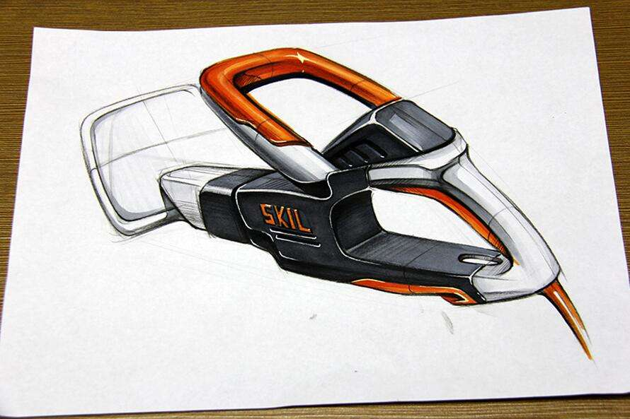

<!DOCTYPE html>
<html lang="en">
<head>
    <meta charset="UTF-8">
    <title>161-vue起步父子组件1</title>
</head>
<body>
<div id="app">
    <fuzujian></fuzujian>
</div>


<script src="js/vue.js"></script>
<script>
    //1、创建子组件构造器
    let zhangsan = Vue.extend({
        template:`
            
        `
    });

    let lisi = Vue.extend({
        template:`
            <p>这是一个标题</p>
        `
    });


    //2.创建父组件构造器
    Vue.component('fuzujian',{
        template: `
            <div>
                <p>这是父组件中原来有的文字</p>
                <hahahah></hahahah>
                <bbbbb></bbbbb>
            </div>
        `,
        components: {
            //这里的bbbb和hahahah分别代表父组件中template里面包含的两个元素
            'hahahah':zhangsan,
            'bbbbb':lisi
        }
    });


    new Vue({
        el:'#app',
        data: {
            message: 'hello vue!'
        }
    });
</script>
</body>
</html>